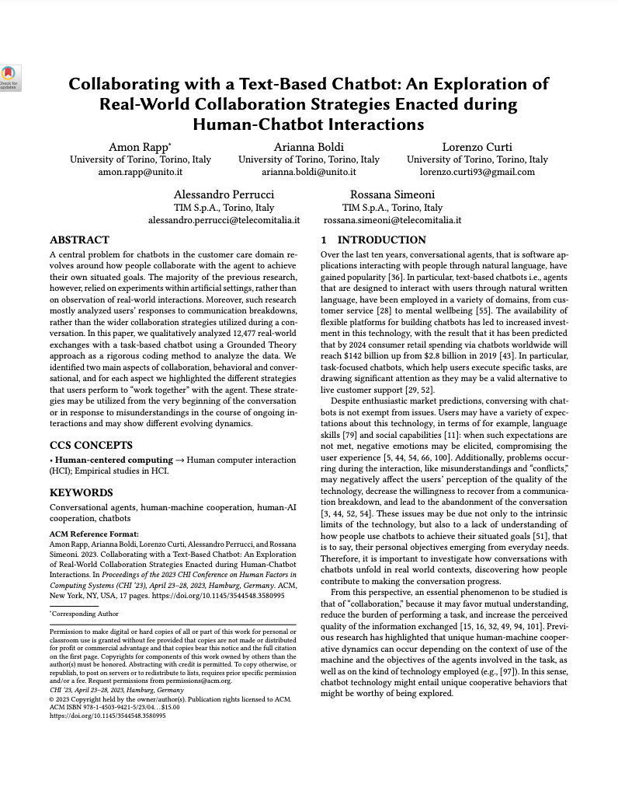
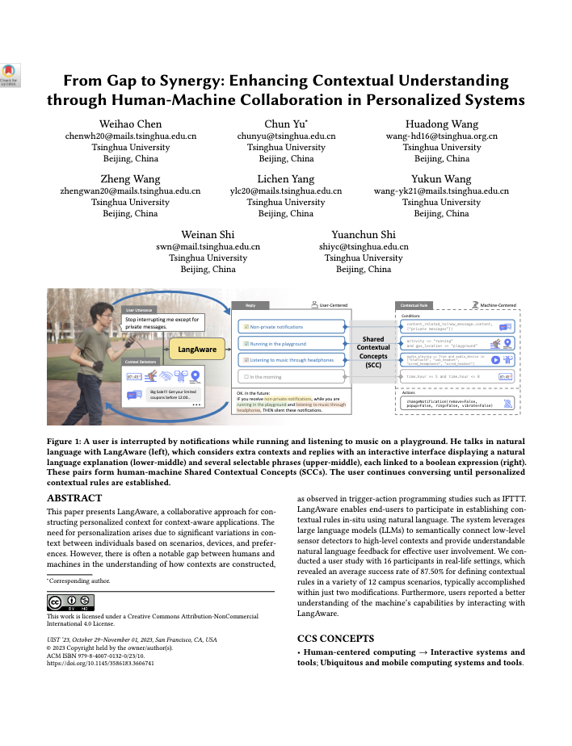

<!DOCTYPE html>
<html lang="en">
<head>
    <meta charset="UTF-8">
    <meta name="viewport" content="width=device-width, initial-scale=1.0">
    <title>Eunseo Yang</title>
    <link rel="stylesheet" href="styles.css">
    <style>        
      .publications { max-width: 1200px; margin: auto; }
      .publication { display: flex; align-items: center; justify-content: space-between; margin-bottom: 40px; cursor: pointer; transition: transform 0.5s ease, box-shadow 0.5s ease; padding: 20px;}
      .publication:hover { transform: scale(1.015); box-shadow: 0 15px 30px rgba(0, 0, 0, 0.2);}  
      .publication-image { flex: 0 0 10%; box-shadow: 0 4px 8px rgba(0, 0, 0, 0.1); }
      .publication-image img { max-width: 100%; height: auto; }
      .publication-content { flex: 2; padding-left: 20px; }
      .publication-title { font-size: 15px; font-weight: bold; margin-bottom: 10px; }
      .publication-authors { font-size: 13px; margin-bottom: 5px; }
      .publication-details { font-size: 13px; margin-bottom: 5px; }
      .publication-pdf { 
        text-decoration: none; 
        color: black; 
        background-color: white; 
        padding: 3px 20px; 
        border-radius: 5px; 
        font-size: 10px; 
        border: 1px solid black; 
        transition: color 0.3s, border-color 0.3s; 
      }
      .publication-pdf:hover { color: #006400; border-color: #006400; background-color: white; }
      .keyword { display: inline-block; background-color: #e7f3ec; border-radius: 10px; padding: 5px 10px; margin: 2px;  /* #d1e5d5
          font-size: 10px; transition: background-color 0.3s, transform 0.3s; }
    </style>

</head>
<body>
    
    <header>
        <h1 id="home-link">Eunseo Yang</h1>
        <nav>
            <ul>
                <li><a href="HCI.html">HCI</a></li>
                <li><a href="VUI.html">VUI</a></li>
                <li><a href="Blogs.html">Blogs</a></li>
                <li><a href="Contact.html">Contact</a></li>
            </ul>
        </nav>
    </header>

    <main>
        <section id="home">
            <h2>HCI Paper Review</h2>
        </section>       
        <div class="publications">
          <div class="publication" data-url="https://eunseo-yang.github.io/eunseo-yang.github.io/HCI/review_paper1_detail_page.html">
            <div class="publication-image">
              
            </div>
            <div class="publication-content">
              <div class="publication-title">Collaborating with a Text-Based Chatbot: An Exploration of Real-World Collaboration Strategies Enacted during Human-Chatbot Interactions</div>
              <div class="publication-authors">A Rapp, A Boldi, L Curti, A Perrucci, R Simeoni</div>
              <div class="publication-details">Proceedings of the 2023 CHI Conference on Human Factors in Computing Systems, 2023</div>
              <div class="publication-year">
                    <span class="keyword">Chatbot</span>, 
                    <span class="keyword">Collaboration</span>, 
                    <span class="keyword">Grounded Theory Approach</span>
              </div>
              <a href="https://dl.acm.org/doi/abs/10.1145/3544548.3580995" class="publication-pdf" target="_blank">DOI</a>
            </div>
          </div>

          <div class="publication" data-url="https://eunseo-yang.github.io/eunseo-yang.github.io/HCI/review_paper2_detail_page.html">
            <div class="publication-image">
              
            </div>
            <div class="publication-content">
              <div class="publication-title">From Gap to Synergy: Enhancing Contextual Understanding through Human-Machine Collaboration in Personalized System</div>
              <div class="publication-authors">W Chen, C Yu, H Wang, Z Wang, L Yang, Y Wang, W Shi, Y Shi</div>
              <div class="publication-details">Proceedings of the 36th Annual ACM Symposium on User Interface Software and Technology, 2023</div>
              <div class="publication-year">
                    <span class="keyword">Context-aware computing</span>
                    <span class="keyword">Personalization</span> 
                    <span class="keyword">LLM</span>
              </div>
              <a href="https://dl.acm.org/doi/abs/10.1145/3586183.3606741" class="publication-pdf" target="_blank">DOI</a>
            </div>
          </div>
        </div>
    </main>

    <footer>
        <p>Made by Eunseo Yang/eunseo1092@gmail.com</p>
    </footer>
    
    <script src="scripts.js"></script>
</body>
</html>
